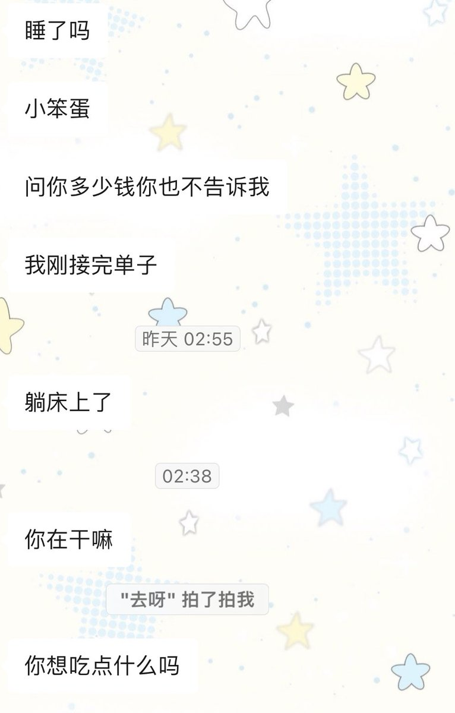
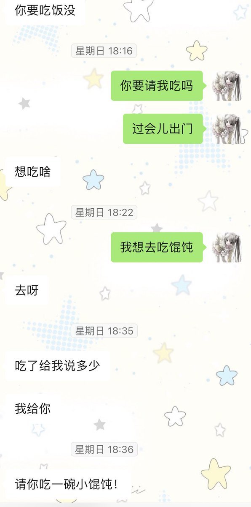

穹
@5oke_k29
@Bookyub1 问要不要就等于在等你说不要 等你说了还要问为什么 装他妈逼


杀夫证道
@Bookyub1
很反感男的问我“要不要”，想给我花钱就直接转钱，要靠别人的客气0成本装大方吗？不喜欢和男人聊天的原因之一就是见过太多这种男的，而和女生从未这样，基本都是先转钱再说，我自己也一样。另外有些话题自己抛出来不尴尬吗，早上好在干嘛吃什么，想找你的人自己会报备，尬聊谁想理。 https://t.co/rk1VkRy1CH